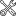

Strona główna
Logarytmy
Wprowadzenie do logarytmów
Ważne wzory
Obliczanie logarytmów
Dodawanie i odejmowanie logarytmów
Logarytm w wykładniku potęgi
Równania logarytmiczne
Ciągi liczbowe
Wprowadzenie do ciągów liczbowych
Wzór ogólny
Monotoniczność ciągu
Ciąg arytmetyczny
Ciąg geometryczny
Granica ciągu liczbowego
Kombinatoryka
Wprowadzenie do kombinatoryki
Reguła mnożenia
Silnia
Kombinacja
Permutacje
Wariacje z powtórzeniami i bez powtórzeń
Prawdopodobieństwo
Wstęp
Wzory i własności
Prawdopodobieństwo warunkowe
Prawdopodobieństwo całkowite
Liczby zespolone
Wprowadzenie
Definicja
Liczby sprzężone
Moduł liczby zespolonej
Interpretacja geometryczna
Wzór de Moivre'a
Pierwiastkowanie liczb zespolonych
Całki
Wprowadzenie
Wzory całkowe wybranych funkcji
Całkowanie przez podstawianie
Całkowanie przez części
Całki funkcji wymiernych
Icons made by
Freepik
from
www.flaticon.com